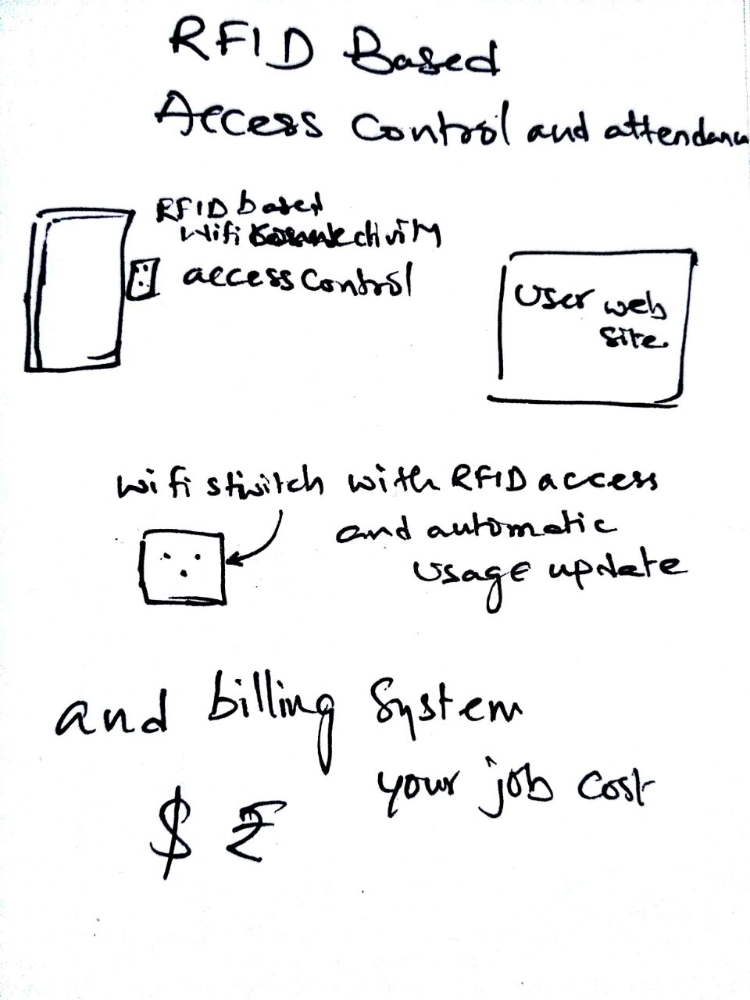

Started the journey of Fab Academy
Now my first week of fabacdemy is almost done ,i have started intiatally with the setup of the LINUX in my Laptop , i used to use the VM ware ,virual Box with the instructions of the instructors started to install the OS ,every thing went well installing Ubuntu, but in mean while i have peeped into laptop of my instructor Vishnu i have found that OS intresting i have asked to for the installer and wanted to create one more partion and making my box triple boot ,that OS was Arch based Manjaro ,my box doesn't let me install it due to secure boot in the UEFI Mode then i have desabled and deleted the Security kees from the BIOS and tried to insatll unfortunately i have deleted the Windows UEFI boot partion and every thing was blank ,OMG from last twodays i was working on the Setup of git and making my website is gone ... at last i recovered the Windows UEFI partion with the help of command promt from the installer disk with repair for diskpart i will write a separete articl for it if you do commit the same mistake that will help to recover , and finally i was able to install the Manjaro OS on my laptop, but my main focus is on the ubuntu for the completion of the fabacademy assignments
Setting the GIT Repo
What is GIT ?
Git is a free and open source distributed version control system designed to handle everything from small to very large projects with speed and efficiency. The purpose of Git is to manage a project, or a set of files, as they change over time. Git stores this information in a data structure called a repository. A git repository contains, among other things, the following: A set of commit objects. A set of references to commit objects, called heads.In Fab Academy our all documentation are stored in a common folder in Git More about Git
GIT is the most other distributed version control systems, and unlike most client–server systems, every Git directory on every computer is a full-fledged repository with complete history and full version tracking abilities, independent of network access or a central server. -- Wikipedia
Detailed process of setup git on your box
Installing Git
To install git in Ubuntu type in a terminal(simply Ctrl+Alt+T) and type window:
sudo apt-get install git

Adding SSH Keys
Open terminal
ssh-keygen -t rsa -b 4096 -C "junaidsyed10 (at) hotmail.com"
You will be asked for location to save the keys
Press enter to chose the default locations.You will be asked for a pass phrase. This is similar to a password for your git. Type a password and REMEMBER IT! Done! Id_rsa is your private key and id_rsa is your public key

Adding SSH Agent
eval "$(ssh-agent -s)" #ensure ssh agent is enabled
ssh-add ~/.ssh/id_rsa # Add key to the agent
Add global username and global email id
git config --global user.name "scitechindian"
git config --global user.email junaidsyed10 (at) hotmail.com

Add your public key to gitlab account
sudo gedit ~/.ssh/id_rsa.pub


Now Clone the Repo
git clone git@git.fabacademy.org:fabacademy2017/fablabtrivandrum.git

Our repository is saved in Fablabtrivandrum folder and my Student id is 213 now i can save my index page and other assignment pages to my students id folder i can upadate it to git repository using the commands. The work flow is shown below
Step 1. Make all the changes to your files
Step 2. Open the termianl and type the following
cd ~/fablabtrivandrum/students/213 # open the directory
git pull # downlods files from repository
git add --all # add your all changes
git commit -m "message" # message which will identify user & purpose of change and update or revert back certain time
git pull # this time to make sure everybodies data which changed in mean while my process of editing covers and safety to downlods files from repository , without this step it won't allow to push
git push # uploading process will start now!

Setting a website
I have previous experience in developing of the websites ,i used to handle our college main website ,so i though to builid it out from scratch and i started the webdevelopment in html and then later i got my on bootstrap css setup from twitter and then started to include them in my website now i am with nice UI, i have used the all the html editors intially i worked with geditor and then shifted to bluefish editor then later shifted to sublime text3 and now i am typing in the Atom editor, in a week i tried allmost the text editors i also used the brackets editor now have a look of my website transition.

intial look

work in progress look

Using ATOM.io editor

finally current look
Ideation
I have lots of ideas i will list one by one
Project idea 1
We have large and meduim and small fablabs as per the need no every one can have a sofesticated security infrastructure and acess control and monitoring system on the usage of the tools so i am planning to build a platform where the security and also acess control to the tools i want to impliment i want to call it as "Fab Access "
 Final ProjectCredits and References
Last but not least we should always remember who helped you
Credits and References